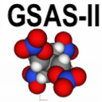

Small Box PDF modeling with PDFfit-II
Tutorial Exercise Files
Click on the links below to download each file
LaMnO3 Pm3m.cif
300K.gr
LaMnO3 Pbnm.cif
created by makeGitTutorial.py
Last modified: Wed Apr 10 16:32:21 2024